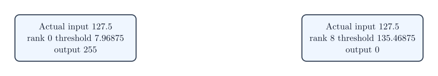
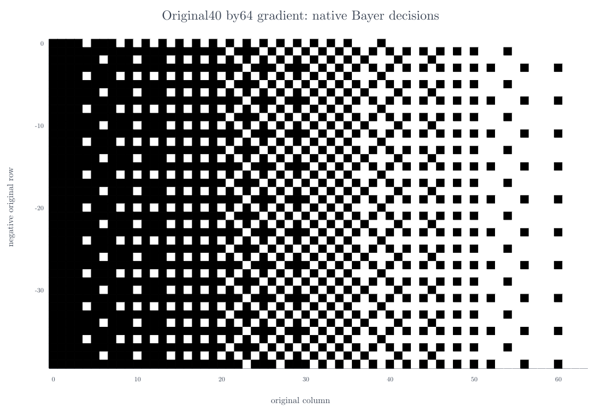
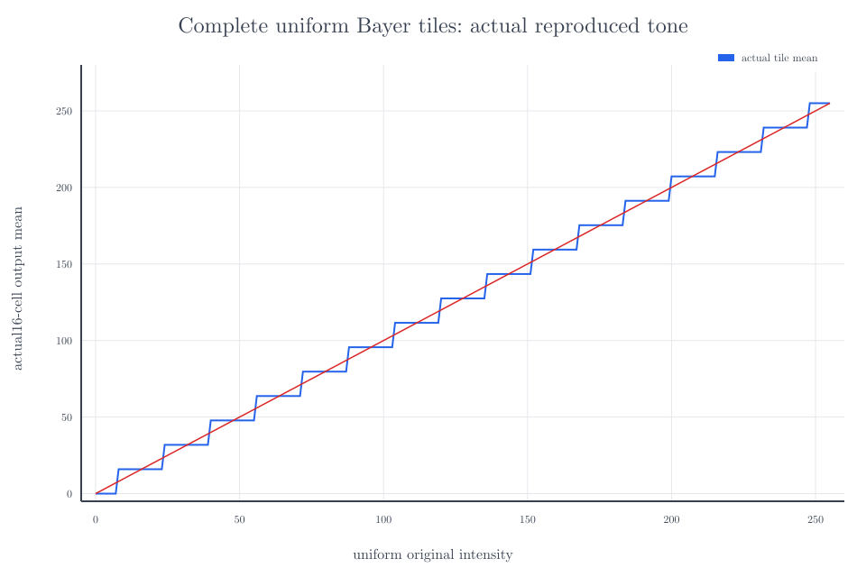
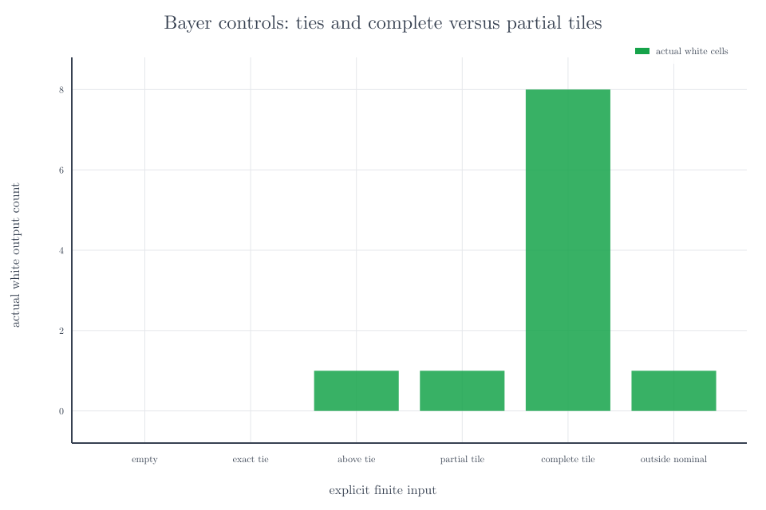

Ordered Bayer dithering: actual independent pixel decisions
Abstract
Start with two actual pixel comparisons, then retain the original40-by64 grayscale gradient. Canonical threshold histories and a native binary-raster plot expose strict ties, spatial pattern and the limited conditions under which a complete Bayer tile approximates a uniform tone.
A tiled permutation of sixteen midpoint thresholds
The native4-by4 Bayer ranks are the rows[0,8,2,10],[12,4,14,6],[3,11,1,9],[15,7,13,5]. Each rank0 through15 appears once. For row i and column j the actual producer applies
Every decision depends only on the original pixel and its tiled position. There is no propagated error, random state or neighboring-pixel dependency. This permits independent scheduling conceptually; the canonical driver is a serial row-major loop and no parallel timing result is claimed. Output is an integer grid with two possible values, not a packed one-bit file.
Two equal inputs, two different actual thresholds
The two inputs127.5 at row0 meet ranks0 and8, whose thresholds are7.96875 and135.46875. Their actual decisions therefore differ. The diagram reads the executed pixel records; it does not recompute a substitute quantizer.
#include <dm/dm.hpp>
int main() {
std::filesystem::create_directories("build");
auto t = dm::algorithms::ordered_dither_trace({{127.5, 127.5}});
dm::graphics::Diagram d;
for (std::size_t i = 0; i < t.steps.size(); ++i) {
auto &s = t.steps[i];
d.node(std::to_string(i), {double(i) * 9, 0},
std::format("Actual input {}\nrank {} threshold {}\noutput {}",
s.input, s.rank, s.threshold, s.output));
}
std::print("| row | column | actual input | actual Bayer rank | actual threshold | actual output |\n| " "---: | ---: | ---: | ---: | ---: | ---: |\n");
for (auto &s : t.steps)
std::print("| {} | {} | {} | {} | {} | {} |\n", s.row, s.col, s.input,
s.rank, s.threshold, s.output);
d.save_svg("build/ordered_tiny.svg");
}| row | column | actual input | actual Bayer rank | actual threshold | actual output |
|---|---|---|---|---|---|
| 0 | 0 | 127.5 | 0 | 7.96875 | 255 |
| 0 | 1 | 127.5 | 8 | 135.46875 | 0 |

Retain the original40-by64 gradient
The reusable native gradient fixture creates intensity255j/63 in every row. The original three column bands remain[0,21),[21,42),[42,64). Their widths differ, so each density uses its own actual cell count. The native plotting helper draws exact black/white cells centered at(column,−row), keeping original row order; fixed tone limits preserve even an all-black or all-white image.
These are descriptive binary densities, not a perceptual score or an equality between each individual input and output intensity. No external image dataset is required for this controlled threshold-method example.
#include <dm/dm.hpp>
int main() {
std::filesystem::create_directories("build");
auto input = dm::algorithms::dither_gradient(40, 64);
auto result = dm::algorithms::ordered_dither_work(input);
auto p = dm::algorithms::ordered_dither_image_plot(result.output);
p.title("Original40 by64 gradient: native Bayer decisions").size(1100, 760).save_svg("build/ordered_original.svg");
std::print("| original band | columns | actual pixels | actual white fraction | input mean | output " "mean | output minus input mean |\n| --- | --- | ---: | ---: | ---: | ---: | ---: |\n");
std::vector<std::string> names{"left", "middle", "right"};
std::vector<std::size_t> edges{0, 64 / 3, 2 * 64 / 3, 64};
for (std::size_t i = 0; i < 3; ++i) {
auto s =
dm::algorithms::dither_region_stats(input, result.output, edges[i],
edges[i + 1]);
std::print("| {} | [{},{}) | {} | {:.12f} | {:.9f} | {:.9f} | {:.9f} |\n",
names[i], edges[i], edges[i + 1], s.pixels,
double(s.white_fraction), double(s.input_mean),
double(s.output_mean), double(s.mean_error));
}
}| original band | columns | actual pixels | actual white fraction | input mean | output mean | output minus input mean |
|---|---|---|---|---|---|---|
| left | [0,21) | 840 | 0.166666666667 | 40.476190476 | 42.500000000 | 2.023809524 |
| middle | [21,42) | 840 | 0.488095238095 | 125.476190476 | 124.464285714 | -1.011904762 |
| right | [42,64) | 880 | 0.829545454545 | 212.500000000 | 211.534090909 | -0.965909091 |

What a complete uniform tile guarantees
For uniform grayscale g in[0,255], a complete4-by4 tile contains all sixteen thresholds exactly once. Its number of white pixels is
The strict comparison sends an exact midpoint tie to the lower white count. Thus the complete uniform-tile mean differs from g by at most255/32. This is a quantization statement for complete periods of a constant input. It does not assert exact tone, a bound for a partial tile, a perceptual optimum, or a universal advantage over error diffusion. The plot uses actual4-by4 runs at every integer input0through255, making the staircase visible. The table samples every32levels plus255 for readability.
#include <dm/dm.hpp>
int main() {
std::filesystem::create_directories("build");
std::vector<double> tones(256), means;
std::iota(tones.begin(), tones.end(), 0.);
std::print("| uniform input | actual white pixels in16 | actual output mean | output minus input |\n| " "---: | ---: | ---: | ---: |\n");
for (double tone : tones) {
auto r =
dm::algorithms::ordered_dither_work(std::vector<std::vector<double>>(4, std::vector<double>(4, tone)));
double mean = double(r.work.output_sum) / r.work.pixels;
means.push_back(mean);
if (int(tone) % 32 == 0 || tone == 255)
std::print("| {} | {} | {:.9f} | {:.9f} |\n", tone, r.work.white,
mean, mean - tone);
}
auto p = dm::graphics::RPlot::create();
p.lines(tones, means, "actual tile mean",
dm::graphics::RGBA{37, 99, 235, 255}).lines({0., 255.}, {0., 255.},
dm::graphics::RGB{
220, 38, 38
}, 1.5);
p.title("Complete uniform Bayer tiles: actual reproduced tone").x_label(
"uniform original intensity").y_label("actual16-cell output mean").x_limits(-5, 260).y_limits(-5, 280).save_svg("build/ordered_tone.svg");
}| uniform input | actual white pixels in16 | actual output mean | output minus input |
|---|---|---|---|
| 0 | 0 | 0.000000000 | 0.000000000 |
| 32 | 2 | 31.875000000 | -0.125000000 |
| 64 | 4 | 63.750000000 | -0.250000000 |
| 96 | 6 | 95.625000000 | -0.375000000 |
| 128 | 8 | 127.500000000 | -0.500000000 |
| 160 | 10 | 159.375000000 | -0.625000000 |
| 192 | 12 | 191.250000000 | -0.750000000 |
| 224 | 14 | 223.125000000 | -0.875000000 |
| 255 | 16 | 255.000000000 | 0.000000000 |

Ties, partial tiles and complete validation
A one-pixel crop at127.5 uses rank0 and becomes255: its mean error is127.5, much larger than the complete-tile bound. A complete4-by4 image of127.5 instead has eight white cells and mean127.5. These examples explain why a whole-tile assertion cannot be transferred to an arbitrary crop.
Complete rectangular shape and finite input checks precede quantization. Finite intensities outside0..255 are accepted without clamping; their threshold decisions naturally saturate. Empty images and zero-width rows retain their shapes. Ordinary work is O(rows+pixels), including complete shape validation, with owned output and constant driver state. The actual-history quota pre-admits2+3N logical units: dimensions2, original pixelsN, output pixelsN and fixed actual pixel recordsN. Default1000000 and zero disables it; it is not bytes or peak-memory usage. No partial trace is returned on failure. No original image is mutated or retained by reference.
#include <dm/dm.hpp>
int main() {
std::filesystem::create_directories("build");
double threshold = dm::algorithms::bayer4_threshold(0, 0);
std::vector<std::vector<std::vector<double>> > inputs{
{}, {{threshold}}, {{std::nextafter(threshold, INFINITY)}}, {{127.5}},
std::vector<std::vector<double>>(4, std::vector<double>(4, 127.5)),
{{-1., 300.}}
};
std::vector<std::string> labels{"empty", "exact tie", "above tie",
"partial tile", "complete tile",
"outside nominal"};
std::vector<double> whites;
std::print("| control | actual pixels | actual white cells | actual capture units |\n| --- | ---: | " "---: | ---: |\n");
for (std::size_t i = 0; i < inputs.size(); ++i) {
auto t = dm::algorithms::ordered_dither_trace(inputs[i]);
whites.push_back(t.result.work.white);
std::print("| {} | {} | {} | {} |\n", labels[i], t.result.work.pixels,
t.result.work.white, t.captured_entries);
}
auto p = dm::graphics::RPlot::barplot(whites, labels, "actual white cells");
p.title("Bayer controls: ties and complete versus partial tiles").x_label(
"explicit finite input").y_label("actual white output count").save_svg(
"build/ordered_controls.svg");
}| control | actual pixels | actual white cells | actual capture units |
|---|---|---|---|
| empty | 0 | 0 | 2 |
| exact tie | 1 | 0 | 5 |
| above tie | 1 | 1 | 5 |
| partial tile | 1 | 1 | 5 |
| complete tile | 16 | 8 | 50 |
| outside nominal | 2 | 1 | 8 |

Verification
This ten-report batch passes 50 CTest cases, 25 directly instrumented ASan/UBSan
cases, 174 compiled and executed public examples, 707/707 scoped documentation
definitions and ten representative clangd hovers. Independent Python checks
verify 5662 records with 27916 checks: optimal prefix-code costs, train-only
Titanic category counts and held-out confusion, and all 5001 actual original
Lorenz RK4 steps. Frozen valid-input comparisons cover all ten producers, with
intentional guard, ownership, arithmetic and endpoint corrections stated
separately. Twelve checkout headers and twelve byte-identical installed
development headers compile independently; an installed-header native consumer
links and runs. All 40 complete programs execute, and 40 native figures have
been visually reviewed. HTML/Markdown exports preserve computed results and
image bytes. These are scoped native checks. Receipts:
build/mepml-conversion/batch-264-273/.